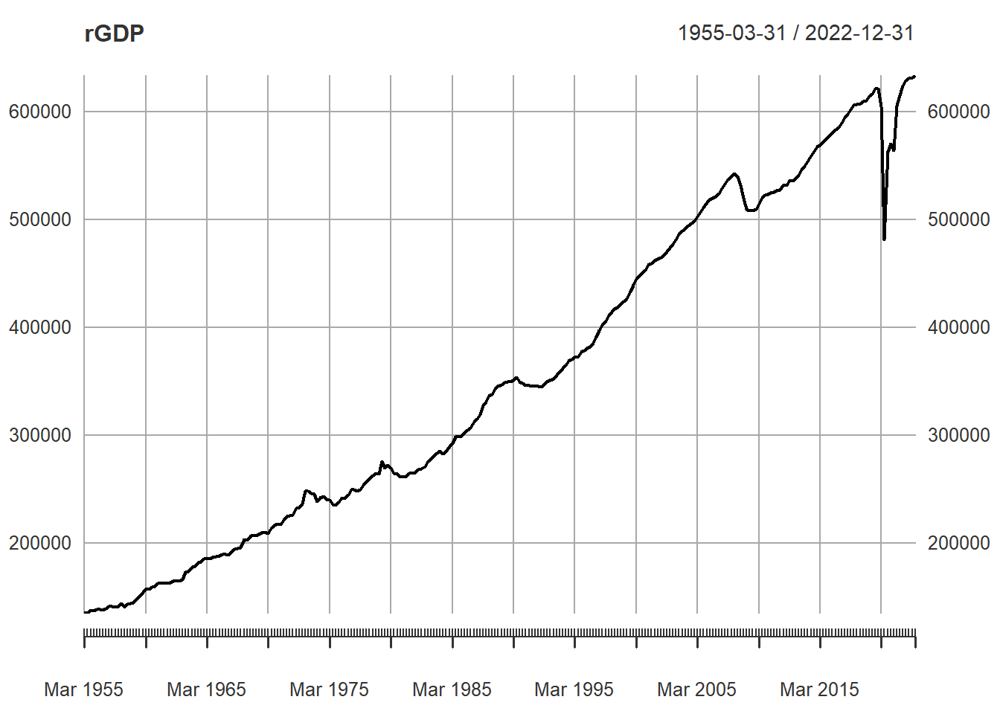
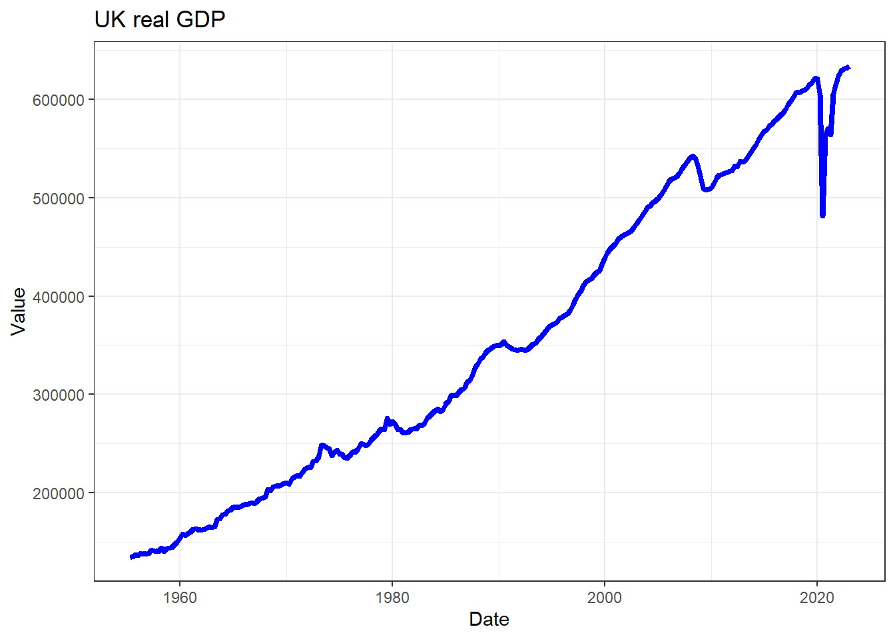
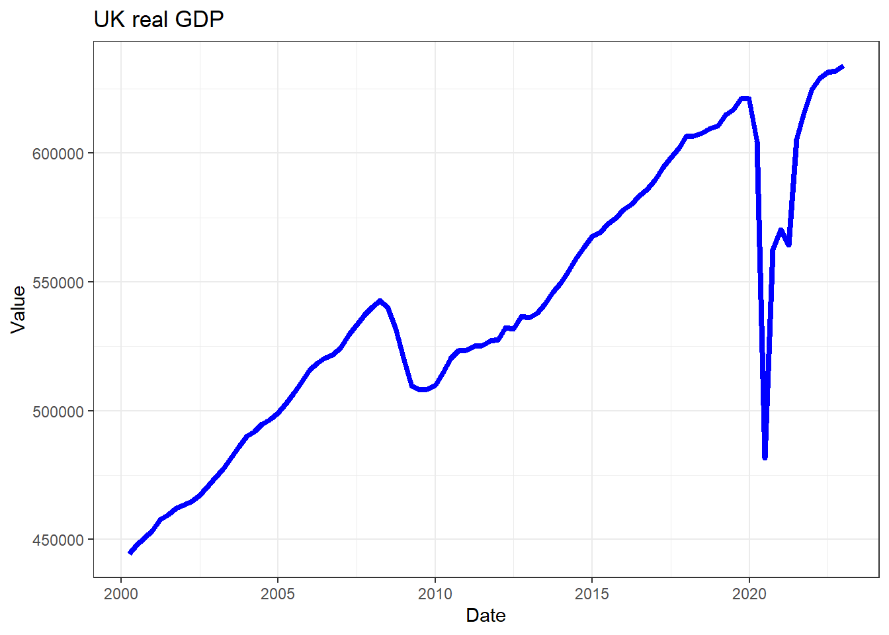
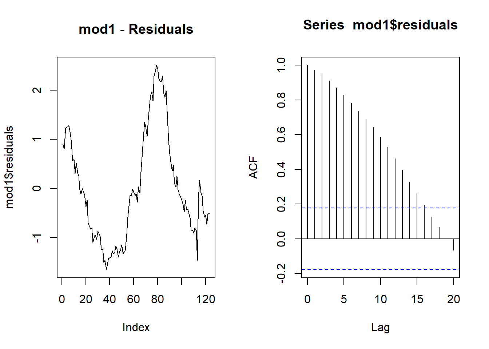
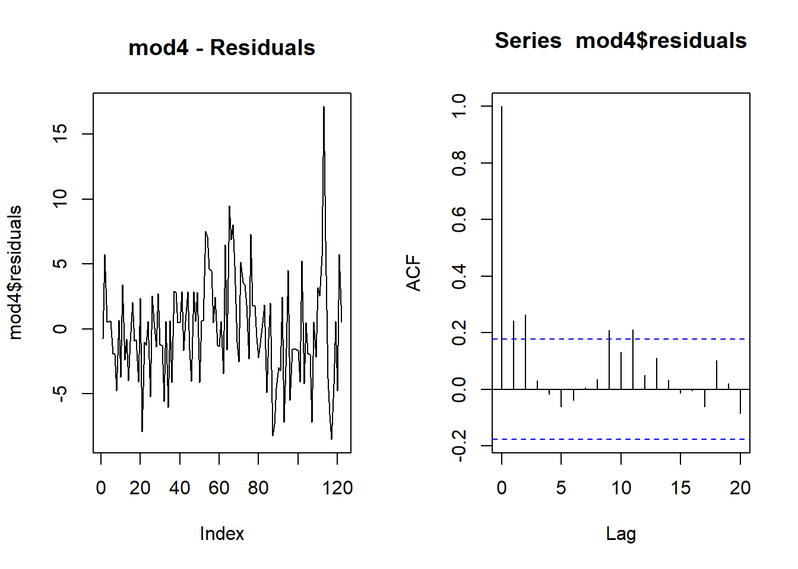

Time-Series Modelling
Introduction
In this section you will learn how to handle time-series data, how to identify some basic characteristics of time-series data and how to do some basic modelling.
Packages and codes used
We shall use and load the following packages:
library(tidyverse)
library(ggplot2)
library(pdfetch) # allows direct access to data
library(xts) # time series formatting
library(AER) # access to HS robust standard errors
library(stargazer) # delivers nice regresison output
library(gridExtra) # required for the combination of ggplotsWe will also use two functions saved in .r files. The function of these two files will be explained below. These are available for download from here: stargazer_HC.R and stargazer_HAC.R.
When you get to that page you will see a download button.

You should save these two files into your working directory. Once they are there, you can make these functions available to your code using these two lines.
source("stargazer_HC.r") # includes the robust regression display
source("stargazer_HAC.r") # includes the Newey-West standard errorsA single time series
Import data
We shall use some data from the Office for National Statistics (ONS)
in the UK. The pdfetch package delivers direct access to
the data of the ONS. When you get data from the ONS you need to know
what the series id is and in which ONS dataset you can find these data.
The way to find out what that info is it is best to go to the ONS time series
tool. YOu can find more detail on how to use this tool from here.
For instance we can get real GDP data (id: AMBI) from the UKEA databank.
rGDP <- pdfetch_ONS("ABMI","UKEA") # reference the database and then the series id
periodicity(rGDP) # check data availability## Quarterly periodicity from 1955-03-31 to 2024-06-30names(rGDP) <- "real GDP" # give a sensible name
# keep all the data including 2022-Q4
# remove this line if you want to use updated data
rGDP <- rGDP["/2022-12"] The format in which the pdfetch function returns the
data is the xts format. This is a format that recognises
that the data are a time-series. If you look at the index of the series
(index(rGDP)), R will show you all the dates.
Time series plots
You can plot this series in a straightforward manner using the
build-in plot function.
plot(rGDP)
But if you want to use the power of the ggplot function
you will have to restructure the data slightly. The reason being that,
to create a line plot in ggplot we need the date as an
actual variable. In rGDP the date is packed into the
index.
Below is how we do that. index(rGDP) extracts the date
and uses it as the first variable in a new dataframe
rGDP_l. Check out the help function ?stack to
better understand what the next piece of code does and how it creates
the 2nd and third variable in the new dataframe..
# we prepare the data for being kept in long format
# that is useful for plotting in ggplot
rGDP_l <- data.frame(index(rGDP),stack(as.data.frame(coredata(rGDP))))
# Give sensible names to columns
names(rGDP_l)[1] <- "Date" # first col will have date
names(rGDP_l)[2] <- "Value" # second col will have value
names(rGDP_l)[3] <- "id" # third col will have series nameNow we can use the geom_line() plot to create a line
plot:
ggplot(rGDP_l,aes(x =Date, y=Value)) +
geom_line(colour = "blue",size = 1.5) +
ggtitle("UK real GDP") +
theme_bw()
If you want to plot a subsample of the data only, the easiest way to
do that is to use the subset function as you call the data
into the ggplot function. Compare what has changed in the
code and figure out what the subset function did.
ggplot(subset(rGDP_l, Date >"2000-01-01"),aes(x =Date, y=Value)) +
geom_line(colour = "blue",size = 1.5) +
ggtitle("UK real GDP") +
theme_bw()
Autocorrelation function (ACF)
Let’s calculate the autocorrelation function. The autocorrelation
function tells you how the a series \(y_t\) is correlated with itself \(k\) periods prior, \(corr(y_t,y_{t-k})\), for a range of values
of \(k\). The acf function
easily achieves this:
temp_acf <- acf(rGDP)Note that the first value shown is for \(k=0\) and hence the function always starts at \(corr(y_t,y_{t-0})=1\).
Multiple time series
Often we will deal with multiple time-series. Now you will learn how to deal with multiple series, store the data, plot them and calculate ACFs.
We download female unemployment rates and monthly inflation rates from the ONS database. On both occasions we put the data into the long format.
# Download: Female unemployment rate (YCPL in database LMS)
ur_female <- pdfetch_ONS("YCPL","LMS")
names(ur_female) <- "Unemp Rate (female)"
periodicity(ur_female)## Monthly periodicity from 1992-04-30 to 2024-06-30# keep all the data including 2022-Jan
# this was the last observation available at the time this was written
# remove this line if you want to use updated data
ur_female <- ur_female["/2022-12"]
ur_female_l <- data.frame(index(ur_female),stack(as.data.frame(coredata(ur_female))))
names(ur_female_l)[1] <- "Date"
names(ur_female_l)[2] <- "Value"
names(ur_female_l)[3] <- "id"
# Download: Inflation rate (D7OE in database MM23)
infl <- pdfetch_ONS("D7OE","MM23")
names(infl) <- "CPI Inflation"
periodicity(infl)## Monthly periodicity from 1988-02-29 to 2024-08-31# keep all the data including 2022-jan
# this was the last observation available at the time this was written
# remove this line if you want to use updated data
infl <- infl["/2022-12"]
infl_l <- data.frame(index(infl),stack(as.data.frame(coredata(infl))))
names(infl_l)[1] <- "Date"
names(infl_l)[2] <- "Value"
names(infl_l)[3] <- "id"Now we put both series into one dataframe by attaching the individual dataframes. This can be done as we gave identical names to the three columns in both dataframes.
data_l <- rbind(rGDP_l,ur_female_l)
data_l <- rbind(data_l,infl_l)Now it may be more obvious why we called this the “long” format as
the data all appear in the same column. Different variables are
differentiated by the id variable.
Let’s produce some time series plots and ACF functions.
p1 <- ggplot(subset(data_l,id == "Unemp Rate (female)"),aes(x =Date, y=Value)) +
geom_line(colour = "blue",size = 1.0) +
ggtitle("Female Unemployment rate") +
theme_bw()
p2 <- ggplot(subset(data_l,id == "CPI Inflation"),aes(x =Date, y=Value)) +
geom_line(colour = "blue",size = 1.0) +
ggtitle("Inflation Rate") +
theme_bw()
grid.arrange(p1, p2, nrow=1, ncol=2)
The grid.arrange(p1, p2, nrow=1, ncol=2) line in the code
helped us to set the two images next to each other. That is very nice
and often useful when you present data. This sort of effect can be
achieved in different ways. It is important to realise that usually you
can do the same think in R in different ways. When presenting the ACF
functions we present a different way.
If the data are in the long format it is pretty straightforward to
put two time-series into one graph (this makes sense if they exist on a
similar scale). We start by selecting the two series from our dataset we
want to show
(subset(data_l,id %in% c("CPI Inflation","Unemp Rate (female)"))),
before feeding this into the ggplot function using
geom_line(). What you do need to do is to tell the function
that the id variable splits the lines by colour
(colour = id).
p2 <- ggplot(subset(data_l,id %in% c("CPI Inflation","Unemp Rate (female)")),aes(x =Date, y=Value, colour = id)) +
geom_line(size = 1.0) +
ggtitle("Various Time-Series") +
theme_bw()
p2Now we return to the ACFs. We now use the
par(mfrow=c(1,2)) line which tells R that the next plots
should be presented in a 1 by 2 frame.
par(mfrow=c(1,2))
acf(ur_female,main = "Unemployment Rate")
acf(infl, main = "Inflation")It will be interesting to see what happens when we difference data series (or often their logs as this approximates growth rates).
g_rGDP <-diff(log(rGDP))
names(g_rGDP) <- "GDP, quarterly growth rate"
g_ur_female <-diff(log(ur_female))
names(g_ur_female) <- "Growth in Unemp Rate (female)"par(mfrow=c(1,2))
acf(g_rGDP,main = "GDP, growth")
acf(g_ur_female, main = "Unemployment Rate, growth")When you do this you will get an error message as the differencing
created a missing value in the g_rGDP and
g_ur_female series and the acf function really
dislikes missing values. Hence we need to tell it to ignore these.
par(mfrow=c(2,2))
plot(g_rGDP)
plot(g_ur_female)
acf(g_rGDP,main = "GDP, growth", na.action = na.pass)
acf(g_ur_female, main = "Unemployment Rate, growth", na.action = na.pass)As you can see from the above, the original series had a very slowly decaying autocorrelation function which is a hallmark of non-stationary data. The differenced series have a very quickly decaying ACF. This illustrates that differencing can make a data series stationary.
There are statistical tests to test whether a series is stationary or not (e.g. ADF tests), however, here we restrict ourselvs to eyeballing the ACF function.
Run a simple regression model
Let’s run a simple regression model with time series data.
\[ur_t = \alpha + \beta ~ rGDP_t + u_t\]
As we have quarterly GDP series we will want to reduce the frequency
of the monthly unemployment data to quarterly. the xts
package which we have been using to deal with the dating aspect of our
data has a handy little function to achieve this.
to.period().
ur_female_q <- to.period(ur_female,period="quarters")As a result we get four values for each quarter (start, end, high and low). We shall associate the last monthly unemployment rate with a particular quarter.
ur_female_q <- ur_female_q$ur_female.CloseWe now have two quarterly series rGDP and
ur_female_q. We shall merge them into the same
dataframe.
reg_data <- merge(rGDP, ur_female_q)
tail(reg_data,10)## real.GDP ur_female.Close
## 2020-09-30 562648 4.8
## 2020-12-31 570338 5.1
## 2021-03-31 564411 4.9
## 2021-06-30 605353 4.5
## 2021-09-30 615459 4.1
## 2021-12-31 624592 3.9
## 2022-03-31 629149 3.9
## 2022-06-30 631258 3.7
## 2022-09-30 631977 3.9
## 2022-12-31 634044 3.9By looking at the last 10 observations we can see that automatically
the dates have been matched. This is super convenient. This is now a
dataset in a wide format, in which each variable occupies its own
columns. This is the format in which you need the data to run
regressions. As you saw above, to plot data with the ggplot
function requires a wide format. You therefore often have to maintain
data in two formats.
We can now feed these data into the lm function and
display the results using the stargazer package (using
heteroskedasticity and autocorrelation robust standard errors,
stargazer_HAC).
mod1 <- lm(ur_female.Close~real.GDP,data = reg_data)
stargazer_HAC(mod1)##
## =============================================================
## Dependent variable:
## -----------------------------------------
## ur_female.Close
## -------------------------------------------------------------
## real.GDP -0.00001***
## (0.00000)
##
## Constant 9.700***
## (0.650)
##
## -------------------------------------------------------------
## Observations 123
## R2 0.270
## Adjusted R2 0.270
## Residual Std. Error 1.100 (df = 121)
## F Statistic 46.000*** (df = 1; 121)
## =============================================================
## Note: *p<0.1; **p<0.05; ***p<0.01
## Newey-West standard errors in parenthesisThis seems to suggest that higher GDP, significantly, reduces the unemployment rate.
Let’s have a look at the residuals.
par(mfrow=c(1,2))
plot(mod1$residuals, type = "l", main = "mod1 - Residuals")
acf(mod1$residuals)
We can see that there is a significant amount of autocorrelation in
the residuals. We can apply the Breusch-Godfrey hypothesis test
(bgtest). The null hypothesis is that there is no
autocorrelation.
bgtest(mod1,order=4)##
## Breusch-Godfrey test for serial correlation of order up to 4
##
## data: mod1
## LM test = 117, df = 4, p-value <2e-16The p-value is virtually 0 suggesting that there is staistically significant evidence that we should reject the null hypothesis of no autocorrelation. What is the consequence?
when looking at the data earlier, we realised that GDP and the female unemployment rate were nonstationary time-series. As you will have learned in your econometrics class, you should (in general) not take any regression results seriously if they involve nonstationary series, and in particular if the regressions from this regression are nonstationary themselves (as are the ones here).
Towards the end of this page you will find a demonstration of this point.
Run a simple regression model - but better
Let’s re-run the simple regression model but this time with differenced (and stationary) time series data.
\[\Delta ur_t = \alpha + \beta ~ \Delta rGDP_t + u_t\]
As we will be modelling the differenced logs of the GDP and unemployment rate it is most convenient to create these variables explicitly in the data frame, otherwise we will have to deal with very long variable names.
# we multiply by 100 to express in percentage points, i.e. 0.5 is 0.5% or 0.005
reg_data$d_lgdp <- 100*diff(log(reg_data$real.GDP))
reg_data$d_lur <- 100*diff(log(reg_data$ur_female.Close)) We can now feed these data into the lm function.
mod4 <- lm(d_lur~d_lgdp,data = reg_data)
stargazer_HAC(mod4)##
## =============================================================
## Dependent variable:
## -----------------------------------------
## d_lur
## -------------------------------------------------------------
## d_lgdp -0.210
## (0.240)
##
## Constant -0.450
## (0.430)
##
## -------------------------------------------------------------
## Observations 122
## R2 0.019
## Adjusted R2 0.011
## Residual Std. Error 4.100 (df = 120)
## F Statistic 2.300 (df = 1; 120)
## =============================================================
## Note: *p<0.1; **p<0.05; ***p<0.01
## Newey-West standard errors in parenthesisThere is no more statistically significant relationship between GDP growth and the growth in the unemployment rate.
Let’s have a look at the residuals.
par(mfrow=c(1,2))
plot(mod4$residuals, type = "l", main = "mod4 - Residuals")
acf(mod4$residuals)
We can see that, at lag 2, there is a small amount of autocorrelation
in the residuals. We can again apply the hypothesis test the
Breusch-Godfrey test (bgtest). The null hypothesis is that
there is no autocorrelation.
bgtest(mod4,order=4)##
## Breusch-Godfrey test for serial correlation of order up to 4
##
## data: mod4
## LM test = 14, df = 4, p-value = 0.007The p-value of 0.00085 suggests that there is still evidence that we should reject the null hypothesis of no autocorrelation. What is the consequence? Fortunately, here, despite the existence of autocorrelation in residuals they still look stationary.
The HAC standard errors above will have accommodated this autocorrelation.
ADL Models
When estimating regresison models with time-series data we will often
consider the inclusion of lagged variables. As the data are saved as
time series data in the xts format), it is very
straightforward to create lagged variables and therefore to estimate a
model like:
\[\Delta ur_t = \alpha + \beta_0 ~ \Delta rGDP_t + \beta_1 ~ \Delta rGDP_{t-1} + \beta_2 ~ \Delta rGDP_{t-2} + \gamma_1 ~ \Delta ur_{t-1} + \gamma_2 ~ \Delta ur_{t-2} + u_t\]
We don’t actually have to create the lagged variables in our
reg_data dataframe. We merely create the lags in the
regression call (e.g. lag(d_lgdp,2) is \(\Delta rGDP_{t-2}\)).
mod5 <- lm(d_lur~lag(d_lur,1)+lag(d_lur,2)+d_lgdp+lag(d_lgdp,1)+lag(d_lgdp,2),data = reg_data)
stargazer_HAC(mod5)##
## ====================================================================================
## Dependent variable:
## ----------------------------------------------------------------
## d_lur
## ------------------------------------------------------------------------------------
## lag(d_lur, 1) 1.000***
## (0.000)
##
## lag(d_lur, 2)
##
##
## d_lgdp -0.000
## (0.000)
##
## lag(d_lgdp, 1)
##
##
## lag(d_lgdp, 2)
##
##
## Constant 0.000
## (0.000)
##
## ------------------------------------------------------------------------------------
## Observations 122
## R2 1.000
## Adjusted R2 1.000
## Residual Std. Error 0.000 (df = 119)
## F Statistic 530,859,669,020,599,095,386,000,440,244,868.000*** (df = 2; 119)
## ====================================================================================
## Note: *p<0.1; **p<0.05; ***p<0.01
## Newey-West standard errors in parenthesispar(mfrow=c(1,2))
plot(mod5$residuals, type = "l",main = "mod5 - Residuals")
acf(mod5$residuals)Now the coefficient to the real GDP growth rate at time \(t\) remains statistically insignificant,
but only marginally. Most important appears to be the unemployment rate
from two quarters prior (t-2), lag(d_lur,2).
bgtest(mod5,order=4)##
## Breusch-Godfrey test for serial correlation of order up to 4
##
## data: mod5
## LM test = 0.7, df = 4, p-value = 1Now we remove the contemporaneous GDP growth rate as this will be important if you wanted to produce forecasts from the unemployment rate from this model.
mod6 <- lm(d_lur~lag(d_lur,1)+lag(d_lur,2)+lag(d_lgdp,1)+lag(d_lgdp,2),data = reg_data)
stargazer_HAC(mod6)##
## ====================================================================================
## Dependent variable:
## ----------------------------------------------------------------
## d_lur
## ------------------------------------------------------------------------------------
## lag(d_lur, 1) 1.000***
## (0.000)
##
## lag(d_lur, 2)
##
##
## lag(d_lgdp, 1) -0.000
## (0.000)
##
## lag(d_lgdp, 2)
##
##
## Constant 0.000
## (0.000)
##
## ------------------------------------------------------------------------------------
## Observations 122
## R2 1.000
## Adjusted R2 1.000
## Residual Std. Error 0.000 (df = 119)
## F Statistic 530,859,669,020,599,095,386,000,440,244,868.000*** (df = 2; 119)
## ====================================================================================
## Note: *p<0.1; **p<0.05; ***p<0.01
## Newey-West standard errors in parenthesispar(mfrow=c(1,2))
plot(mod6$residuals, type = "l",main = "mod6 - Residuals")
acf(mod6$residuals)bgtest(mod6,order=4)##
## Breusch-Godfrey test for serial correlation of order up to 4
##
## data: mod6
## LM test = 0.7, df = 4, p-value = 1Autoregressive Models
The above model can be further simplified by excluding the GDP growth variables altogether. Such models are then called autoregressive models.
mod7 <- lm(d_lur~lag(d_lur,1)+lag(d_lur,2),data = reg_data)
stargazer_HAC(mod7)##
## ======================================================================================
## Dependent variable:
## ------------------------------------------------------------------
## d_lur
## --------------------------------------------------------------------------------------
## lag(d_lur, 1) 1.000***
## (0.000)
##
## lag(d_lur, 2)
##
##
## Constant 0.000
## (0.000)
##
## --------------------------------------------------------------------------------------
## Observations 122
## R2 1.000
## Adjusted R2 1.000
## Residual Std. Error 0.000 (df = 120)
## F Statistic 1,070,617,863,298,088,691,546,248,426,880,480.000*** (df = 1; 120)
## ======================================================================================
## Note: *p<0.1; **p<0.05; ***p<0.01
## Newey-West standard errors in parenthesispar(mfrow=c(1,2))
plot(mod7$residuals, type = "l",main = "mod7 - Residuals")
acf(mod7$residuals)
bgtest(mod7,order=4)##
## Breusch-Godfrey test for serial correlation of order up to 4
##
## data: mod7
## LM test = 0.7, df = 4, p-value = 1Let’s look at all these models together in one table.
stargazer_HAC(mod4,mod5,mod6,mod7,type_out = "text", omit.stat = "f")##
## =======================================================================================
## Dependent variable:
## -------------------------------------------------------------------
## d_lur
## (1) (2) (3) (4)
## ---------------------------------------------------------------------------------------
## lag(d_lur, 1) 1.000*** 1.000*** 1.000***
## (0.000) (0.000) (0.000)
##
## lag(d_lur, 2)
##
##
## d_lgdp -0.210 -0.000
## (0.240) (0.000)
##
## lag(d_lgdp, 1) -0.000
## (0.000)
##
## lag(d_lgdp, 2)
##
##
## Constant -0.450 0.000 0.000 0.000
## (0.430) (0.000) (0.000) (0.000)
##
## ---------------------------------------------------------------------------------------
## Observations 122 122 122 122
## R2 0.019 1.000 1.000 1.000
## Adjusted R2 0.011 1.000 1.000 1.000
## Residual Std. Error 4.100 (df = 120) 0.000 (df = 119) 0.000 (df = 119) 0.000 (df = 120)
## =======================================================================================
## Note: *p<0.1; **p<0.05; ***p<0.01
## Newey-West standard errors in parenthesisInformation criteria
Let’s say we wanted to figure out whether it would be better to
include more lags. In addition to models mod6 (ADL) and
mod7 (AR), we shall estimate the equivalent models with 4
lags. In order to then decide which model is best we look at an
information criteria. This recognises that the inclusion of additional
variables (lags) will improve the fit, but it will also reduce the
precision with which the parameters are estimated. That can be
detrimental especially for forecasting. Information criteria take this
trade-off into account and offer a way to chose the best model.
mod6_4 <- lm(d_lur~lag(d_lur,1)+lag(d_lur,2)+lag(d_lur,3)+lag(d_lur,4)+
lag(d_lgdp,1)+lag(d_lgdp,2)+lag(d_lgdp,3)+lag(d_lgdp,4),data = reg_data)
mod7_4 <- lm(d_lur~lag(d_lur,1)+lag(d_lur,2)+lag(d_lur,3)+lag(d_lur,4),data = reg_data)
stargazer_HAC(mod6,mod7,mod6_4,mod7_4,type_out = "text", omit.stat = "f")##
## =======================================================================================
## Dependent variable:
## -------------------------------------------------------------------
## d_lur
## (1) (2) (3) (4)
## ---------------------------------------------------------------------------------------
## lag(d_lur, 1) 1.000*** 1.000*** 1.000*** 1.000***
## (0.000) (0.000) (0.000) (0.000)
##
## lag(d_lur, 2)
##
##
## lag(d_lur, 3)
##
##
## lag(d_lur, 4)
##
##
## lag(d_lgdp, 1) -0.000 -0.000
## (0.000) (0.000)
##
## lag(d_lgdp, 2)
##
##
## lag(d_lgdp, 3)
##
##
## lag(d_lgdp, 4)
##
##
## Constant 0.000 0.000 0.000 0.000
## (0.000) (0.000) (0.000) (0.000)
##
## ---------------------------------------------------------------------------------------
## Observations 122 122 122 122
## R2 1.000 1.000 1.000 1.000
## Adjusted R2 1.000 1.000 1.000 1.000
## Residual Std. Error 0.000 (df = 119) 0.000 (df = 120) 0.000 (df = 119) 0.000 (df = 120)
## =======================================================================================
## Note: *p<0.1; **p<0.05; ***p<0.01
## Newey-West standard errors in parenthesisAIC(mod6, mod7, mod6_4,mod7_4)## df AIC
## mod6 4 -7995
## mod7 3 -7997
## mod6_4 4 -7995
## mod7_4 3 -7997We chose the model with the smallest value for the information criterion and on this occasion this is the ADL model with 4 lags (despite lags 3 and 4 not being statistically significant).
Summary
In this page you learned how to deal with time-series data, visualise these in plots, calculate autocorrelation functions, difference serious and use them in simple regression models. As we went along we pointed out that running regresisons with nonstationary series may not be a good idea. In the following addendum we attempt to demonstrates why that is the case.
Addendum - Spurious correlations and regressions
Let’s get some datasets from EUROSTAT. The data are saved here: EUROSTATtimeseries.csv. Save this file into your working directory. The dataset contains the following four variables
- % of agricultural area Total fully converted and under conversion to organic farming in Germany, “sdg_02_40”
- Thousands of passengers travelling to and from Norway by boat, “mar_pa_aa”
- Population with tertiary education (%) in Italy, “edat_lfse_03”
- Energy consumption, in Poland “Ene.Cons.PO”
The data are annual data from 2000 to 2021, 22 obs. YOu may wonder why these four series were used, they seem to be totally unrelated. And that is exactly the point. There is really no way that you could sensibly argue that there is any economic relationship between any of these four series.
data_sr <- read_csv("EUROSTATtimeseries.csv")These data are not yet in the xts data format. We can
convert them into that time-series format as follows:
dates <- seq(as.Date("2000-12-31"),length=22,by="years")
data_sr <- xts(x=data_sr, order.by = dates)We told you earlier that there are different ways to arrange several
plots in a grid. Below I present yet another (layout - this
is possibly the most powerful of the three as you can determine how big
each graph should be)! Don’t say that this is annoying! I am merely
ramming home the message that the same thing can be done in different
ways and anyways, you will not be remembering how to do all these
things. When you want to do it you will be searching for “R arrange
plots in grid” or something similar. Then you will hit on any of these
methods and that is what you will adjust.
layout(matrix(c(1,2,3,4), 2, 2, byrow = TRUE),
widths=c(1,1), heights=c(1,1))
plot.zoo(data_sr$Boat.Passengers.NO, ylab="", xlab = "", main = "Sea Passengers\n NOR")
plot.zoo(data_sr$Organic.Farming.GE, ylab="", xlab = "", main = "Organic Farming\n GER")
plot.zoo(data_sr$Tert.Educ.IT, ylab="", xlab = "", main = "Tertiary Education\n ITA")
plot.zoo(data_sr$Ene.Cons.PO, ylab="", xlab = "", main = "Energy Consumption\n POL") In the above graphing commands I used
In the above graphing commands I used plot.zoo and not
ggplot or the standard plot. You could have
used ggplot after bringing the data into long format. You
could have used the standard plot function. It actually
does recognise that the data are time-series data and then automatically
adds all sorts of formatting to the graphs (try by replacing
plot.zoo with plot in the above) which is
rather annoying. plot.zoo is a specialised plotting
function for time-series data which allows some manual finessing.
As you can see from the time series plots, all ,but for the Norwegian series on sea passengers, are trending data and hence nonstationary. Let us run a regression between two of the clearly nonstationary series:
mod_sr <- lm(Ene.Cons.PO~Organic.Farming.GE, data = data_sr)
stargazer_HAC(mod_sr)##
## =============================================================
## Dependent variable:
## -----------------------------------------
## Ene.Cons.PO
## -------------------------------------------------------------
## Organic.Farming.GE 2.900***
## (0.480)
##
## Constant 76.000***
## (2.500)
##
## -------------------------------------------------------------
## Observations 22
## R2 0.710
## Adjusted R2 0.690
## Residual Std. Error 3.200 (df = 20)
## F Statistic 49.000*** (df = 1; 20)
## =============================================================
## Note: *p<0.1; **p<0.05; ***p<0.01
## Newey-West standard errors in parenthesisOn the face of it, there seems to be a clear, statistically significant relationship between these series. This is a spurious regression. One way how you can unmask the spuriousness, if both series are trending is to include a time trend
mod_sr2 <- lm(Ene.Cons.PO~Organic.Farming.GE+index(data_sr), data = data_sr)
stargazer_HAC(mod_sr2,type_out = "text", omit.stat = "f")##
## =============================================================
## Dependent variable:
## -----------------------------------------
## Ene.Cons.PO
## -------------------------------------------------------------
## Organic.Farming.GE 1.100
## (1.900)
##
## index(data_sr) 0.001
## (0.001)
##
## Constant 67.000***
## (10.000)
##
## -------------------------------------------------------------
## Observations 22
## R2 0.740
## Adjusted R2 0.710
## Residual Std. Error 3.100 (df = 19)
## =============================================================
## Note: *p<0.1; **p<0.05; ***p<0.01
## Newey-West standard errors in parenthesisNow we can see that the obvious relationship between the two variables has disappeared (as it should be).
We may also want to look at running a model in the differences of variables rather than the levels.
mod_sr3 <- lm(diff(Ene.Cons.PO)~diff(Organic.Farming.GE), data = data_sr)
stargazer_HAC(mod_sr,mod_sr2,mod_sr3,type_out = "text", omit.stat = "f")##
## ==========================================================================
## Dependent variable:
## -------------------------------------------------
## Ene.Cons.PO diff(Ene.Cons.PO)
## (1) (2) (3)
## --------------------------------------------------------------------------
## Organic.Farming.GE 2.900*** 1.100
## (0.480) (1.900)
##
## index(data_sr) 0.001
## (0.001)
##
## diff(Organic.Farming.GE) -1.200
## (1.800)
##
## Constant 76.000*** 67.000*** 1.300
## (2.500) (10.000) (1.100)
##
## --------------------------------------------------------------------------
## Observations 22 22 21
## R2 0.710 0.740 0.020
## Adjusted R2 0.690 0.710 -0.031
## Residual Std. Error 3.200 (df = 20) 3.100 (df = 19) 3.500 (df = 19)
## ==========================================================================
## Note: *p<0.1; **p<0.05; ***p<0.01
## Newey-West standard errors in parenthesisYou can see that both, including a time trend or estimating the model in growth rates, eliminated the spurious correlation between the two variables.
You can replicate this finding for any combination of nonstationary variables.